리눅스마스터-2급 (2020-12-12 기출문제)
1과목: 리눅스 운영 및 관리
1. 다음 중 ( 괄호 ) 안에 들어갈 내용으로 틀린 것은?
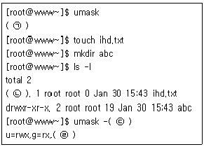
- ㉠ : 0022
- ㉡ : -rwxr-xr-x
- ㉢ : S
- ㉣ : o=rx
(정답률: 69%)

2. 다음 중 /etc/fstab에 대한 설명으로 틀린 것은?
- 첫 번째 필드는 장치명, 볼륨 라벨, UUID 모두 사용이 가능하다.
- 특정 파티션을 부팅 시에 자동으로 마운트되지 않도록 설정 할 수 있다.
- dump 명령을 통한 백업 시 사용주기를 매일 수행, 이틀에 한번 수행, 주1회 수행으로 설정이 가능하다.
- 파일 시스템 관련 정보 파일로 mount, umount, fsck 등의 명령어가 수행될 때 이 파일의 정보를 참조한다.
(정답률: 66%)
3. 다음과 같이 허가권을 설정하기 위한 명령으로 알맞은 것은?
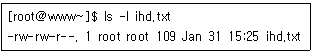
- chmod 664 ihd.txt
- chmod o-wx ihd.txt
- chmod ugo+rw ihd.txt
- chmod o-r,o-rw ihd.txt
(정답률: 86%)
4. 다음 중 ( 괄호 )안에 들어갈 옵션으로 알맞은 것은?
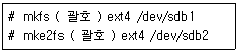
- -j
- -t
- -c
- -b
(정답률: 73%)
5. 디렉터리에 설정되어 있는 특수 권한으로 알맞은 것은?
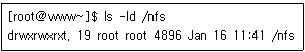
- Set-GID
- Set-OID
- Set-UID
- Sticky-Bit
(정답률: 78%)
6. 다음 중 chmod 명령의 문자 모드에 사용하는 설정기호로 틀린 것은?
- +
- -
- =
- *
(정답률: 80%)
7. 다음 중 저널링(Journaling)기능이 적용되지 않은 파일시스템으로 알맞은 것은?
- XFS
- ext2
- ext4
- Reiserfs
(정답률: 75%)
8. 다음 중 fdisk 명령 실행 시 파티션 속성을 변경하기 위한 명령으로 알맞은 것은?
- d
- n
- p
- t
(정답률: 64%)
9. 다음 중 /etc 디렉터리가 차지하고 있는 전체 용량을 확인할 때 사용하는 명령으로 가장 알맞은 것은?
- ls
- df
- du
- mount
(정답률: 69%)
10. 다음 중 분할된 파티션 단위로 사용량을 확인할 때 사용하는 명령으로 알맞은 것은?
- df
- du
- mkfs
- mount
(정답률: 69%)
11. 다음은 root 사용자가 kaituser의 셸을 변경하는 과정이다. ( 괄호 ) 안에 들어갈 내용으로 알맞은 것은?
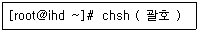
- kaituser
- -s kaituser
- -u kaituser
- -v kaituser
(정답률: 49%)
12. 다음 중 저장되는 히스토리 스택의 개수를 지정하는 환경변수로 알맞은 것은?
- HISTROY
- HISTSIZE
- HISTFILESIZE
- HISTSTACK
(정답률: 68%)
13. 다음 중 /etc/passwd 파일에서 사용자의 로그인셸이 기록되어 있는 곳으로 알맞은 것은?
- 4번째 필드
- 5번째 필드
- 6번째 필드
- 7번째 필드
(정답률: 55%)
14. 다음 중 특정 사용자의 ~/.bashrc 파일에 설정하는 항목으로 가장 알맞은 것은?
- 프롬프트와 function
- alias와 프롬프트
- alias와 function
- 프롬프트와 PATH
(정답률: 60%)
15. 다음 중 사용 가능한 셸의 목록을 확인하는 명령으로 알맞은 것은?
- set
- env
- chsh
- usermod
(정답률: 63%)
16. 다음 중 ihduser 사용자가 본인의 홈 디렉터리로 이동하려고 할 때 ( 괄호 ) 안에 들어갈 내용으로 알맞은 것은?
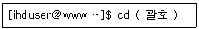
- USER
- $USER
- HOME
- $HOME
(정답률: 74%)
17. 다음 설명과 관련 있는 파일로 알맞은 것은?
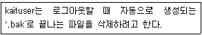
- ~/.bashrc
- ~/.bash_logout
- ~/.bash_profile
- ~/.bash_history
(정답률: 70%)
18. 다음 중 사용자의 로그인 셸이 기록되어 있는 환경 변수로 알맞은 것은?
- USER
- HOME
- SHELL
- PWD
(정답률: 62%)
19. 다음 제시된 NI 값 중에서 우선순위가 가장 낮게 할당되는 값으로 알맞은 것은?
- -20
- 0
- 10
- 20
(정답률: 62%)
20. 다음중 번호값이가장작은 시그널명으로알맞은것은?
- SIGINT
- SIGHUP
- SIGQUIT
- SIGCONT
(정답률: 65%)
21. 다음 중 백업 스크립트가 일주일에 1회만 실행되도록 crontab에 설정하는 내용으로 알맞은 것은?
- 1 1 1 * * /etc/backup.sh
- 1 1 * 1 * /etc/backup.sh
- 1 1 * 5 * /etc/backup.sh
- 1 1 * * 5 /etc/backup.sh
(정답률: 60%)
22. 사용 중인 bash 프로세스의 PID 1222일 때 renice 명령의 사용법으로 알맞은 것은?
- renice 1 bash
- renice 1 1222
- renice --1 bash
- renice --1 1222
(정답률: 65%)
23. 다음 중 포어그라운드 프로세스를 백그라운드 프로세스로 전환하기 위해 일시 정지(suspend)시키는 키 조합으로 알맞은 것은?
- [Ctrl]+[c]
- [Ctrl]+[d]
- [Ctrl]+[x]
- [Ctrl]+[z]
(정답률: 76%)
24. 다음 설명에 해당하는 내용으로 알맞은 것은?
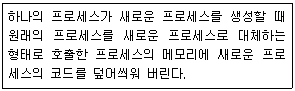
- fork
- exec
- foreground process
- background process
(정답률: 71%)
25. 다음 ( 괄호 ) 안에 들어갈 내용으로 알맞은 것은?
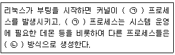
- ㉠ init ㉡ exec
- ㉠ init ㉡ fork
- ㉠ inetd ㉡ exec
- ㉠ inetd ㉡ fork
(정답률: 61%)
26. 다음 중 사용자가 백그라운드로 실행한 프로세스의 상태를 확인할 때 사용하는 명령으로 알맞은 것은?
- bg
- fg
- jobs
- nohup
(정답률: 75%)
27. 다음 중 우선순위가 인위적으로 높아진 상태를 의미하는 프로세스 상태 코드 값으로 알맞은 것은?
- H
- N
- ＜
- ＞
(정답률: 53%)
28. 다음 프로세스 상태를 출력해주는 명령의 결과에 대한 설명으로 알맞은 것은?
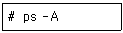
- 터미널과 연관된 프로세스를 출력한다.
- System V 계열에서 모든 프로세스를 출력하는 명령이다.
- 시스템에 동작 중인 모든 프로세스를 소유자 정보와 함께 출력한다.
- 세션 리더를 제외하고 터미널에 종속되지 않은 모든 프로세스를 출력한다.
(정답률: 47%)
29. 다음 중 실행 중인 emacs 편집기를 종료하는 키 조합(key stroke)으로 알맞은 것은?
- [Ctrl]+[x] 다음에 [Ctrl]+[c]
- [Ctrl]+[x] 다음에 [Ctrl]+[e]
- [Ctrl]+[x] 다음에 [Ctrl]+[s]
- [Ctrl]+[x] 다음에 [Ctrl]+[f]
(정답률: 64%)
30. 다음 그림에 해당하는 편집기로 알맞은 것은?
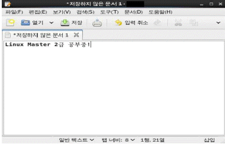
- nano
- pico
- gedit
- emacs
(정답률: 68%)
31. 다음에 설명하는 vi 편집기의 명령으로 알맞은 것은?
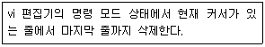
- :.,$d
- :1,$d
- :%d
- :.,%d
(정답률: 59%)
32. 다음 중 vi 편집기에서 변경된 내용을 저장하지 않고 강제로 종료할 때 사용하는 명령으로 알맞은 것은?
- :w!
- :e!
- :q!
- :x!
(정답률: 85%)
33. 다음 중 pico를 개발한 사람으로 알맞은 것은?
- 빌 조이
- 리처드 스톨만
- 리누스 토발즈
- 아보일 카사르
(정답률: 66%)
34. 다음 중 vi 편집기에서 사용되는 모드로 틀린 것은?
- 명령 모드
- 설정 모드
- 입력 모드
- ex 명령 모드
(정답률: 67%)
35. 다음은 시스템에 설치된 rpm 패키지 중 아파치 데몬과 관련된 모든 패키지를 출력하려고 한다. 다음 (괄호) 안에 들어갈 내용으로 알맞은 것은?
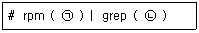
- ㉠ -qi ㉡ apache
- ㉠ -qa ㉡ httpd
- ㉠ -qf ㉡ web
- ㉠ -ql ㉡ apr
(정답률: 57%)
36. 다음 (괄호) 안에 들어갈 내용으로 알맞은 것은?
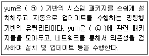
- ㉠ deb ㉡ library
- ㉠ rpm ㉡ repository
- ㉠ rpm ㉡ library
- ㉠ deb ㉡ repository
(정답률: 63%)
37. 다음 중 httpd 라는 패키지를 리눅스 배포판 중 수세에서 주로 사용하는 온라인 패키지 관리 기법으로 설치하는 명령으로 알맞은 것은?
- yum install httpd -y
- apt-get install httpd
- zypper install httpd
- rpm -i httpd
(정답률: 71%)
38. 다음 중 의존성 관계에 있는 패키지가 존재하지 않는 경우 강제로 설치하려고 할 때 (괄호) 안에 들어갈 내용으로 알맞은 것은?
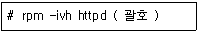
- --nodeps
- --freshen
- --force
- --hash
(정답률: 63%)
39. 다음 중 패키지에 대한 설명으로 거리가 먼 것은?
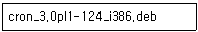
- 이 패키지는 관리 도구로 dpkg만 사용가능하다.
- 이 패키지는 i386 시스템에서만 사용 가능하다.
- 이 패키지는 124번 빌드되었다.
- 이 패키지 버전은 3.0pl1 이다.
(정답률: 60%)
40. 다음 중 tar 명령어 실행 시 사용 가능한 명령어에 대한 설명으로 틀린 것은?
- t : tar 파일 안에 묶여 있는 파일의 목록을 출력한다.
- v : 어떤 명령을 실행할 때 대상이 되고 있는 파일들을 보여준다.
- p : 파일이 생성되었을 때 파일의 권한을 그대로 유지하게 해준다.
- x : 지정한 파일이나 디렉터리를 하나로 묶어 새로운 tar 파일을 생성한다.
(정답률: 60%)
41. apt-get에 대한 설명으로 틀린 것은?
- 데비안 계열 리눅스 배포판에서 사용되는 유틸리티이다.
- /etc/apt/sources.list 파일을 참고하여 패키지설치 관련 정보를 관리한다.
- remove 명령어는 /var/cache/apt/archive 에 생성된 파일을 전부 삭제한다.
- APT(Advanced Packaging Tool) 라이브러리를 이용한 명령행 기반의 도구이다.
(정답률: 64%)
42. 다음 중 소스파일을 압축하는 유틸리티 종류로 가장 거리가 먼 것은?
- tar
- xz
- gcc
- gzip
(정답률: 79%)
43. 다음 중 네트워크를 통해 프린터를 설정할 때 사용되는 포트번호로 가장 알맞은 것은?
- 80
- 443
- 631
- 8080
(정답률: 58%)
44. 다음 ( 괄호 ) 안에 들어갈 명령으로 알맞은 것은?
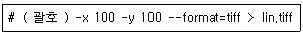
- xcam
- scanadf
- scanimage
- sane-find-scanner
(정답률: 57%)
45. 다음 중 출력 요청 ID(Request-ID)를 확인 후에 프린터 작업을 취소하는 명령으로 가장 알맞은 것은?
- lpr
- lpq
- lprm
- cancel
(정답률: 62%)
46. 다음 중 SANE에 대한 설명으로 틀린 것은?
- GPL 라이선스로 공개되어 있다.
- GTK+ 라이브러리로 만들어졌다.
- 이미지 관련 하드웨어를 사용할 수 있도록 해주는 API이다.
- 스캐너 관련 드라이버와 사용자 관련 명령이 있는 2개의 패키지로 구분되어서 배포된다.
(정답률: 48%)
47. 다음 중 지정한 파일이 프린터를 통해 출력되도록 작업을 요청하는 명령으로 알맞은 것은?
- pr
- lp
- lpc
- lpq
(정답률: 59%)
48. 다음 중 CUPS와 관련 있는 설정 명령으로 알맞은 것은?
- alsactl
- cdparanoia
- scanimage
- lpadmin
(정답률: 48%)
2과목: 리눅스 활용
49. 다음 중 GNOME에 포함된 프로그램으로 틀린 것은?
- GIMP
- Gwenview
- gedit
- eog
(정답률: 49%)
50. 다음 설명에 해당하는 내용으로 알맞은 것은?
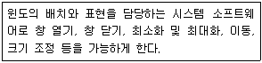
- 윈도 매니저
- 디스플레이 매니저
- 데스크톱 환경
- 파일관리자
(정답률: 65%)
51. 다음 중 X 윈도 관련 프로그램의 종류가 나머지 셋과 다른 것은?
- Kwin
- Xfce
- LXDE
- GNOME
(정답률: 42%)
52. 다음 중 X 서버에 접근할 수 있는 클라이언트를 서버에 생성된 키 기반으로 제어할 때 사용하는 명령으로 알맞은 것은?
- xauth
- xhost
- Xauthority
- .Xauthority
(정답률: 56%)
53. 다음 중 워드 프로세서 프로그램으로 알맞은 것은?
- LibreOffice Calc
- LibreOffice Draw
- LibreOffice Writer
- LibreOffice Impress
(정답률: 77%)
54. 다음 중 KDE과 가장 관련 있는 라이브러리로 알맞은 것은?
- Qt
- GTK+
- KDM
- Konqueror
(정답률: 56%)
55. 다음 중 xhost 명령에 관한 설명으로 알맞은 것은?
- X 서버에 접근할 수 있는 클라이언트를 지정하거나 해제하는 명령이다.
- +나 –기호를 사용해 접근 우선순위를 지정할 수 있다.
- 사용자 기반 인증을 통한 접근허가 파일 관련 도구이다.
- 특정 사용자가 실행하면 $HOME/.Xauthority 파일이 생성된다.
(정답률: 55%)
56. 다음 중 X 클라이언트 프로그램을 원격지의 X 서버에 전달하기 위해 수정하는 환경변수로 알맞은 것은?
- SESSION
- DESKTOP
- XSERVER
- DISPLAY
(정답률: 67%)
57. 다음 중 NFS 서버 사용 시에 반드시 구동해야할 데몬으로 알맞은 것은?
- CIFS
- NetBIOS
- RPCBIND
- LanManager
(정답률: 40%)
58. 다음 ( 괄호 ) 안에 들어갈 내용으로 알맞은 것은?
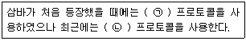
- ㉠ portmap ㉡ rpcbind
- ㉠ rpcbind ㉡ portmap
- ㉠ CIFS ㉡ SMB
- ㉠ SMB ㉡ CIFS
(정답률: 68%)
59. 다음 중 게이트웨이 주소값을 확인하는 명령으로 알맞은 것은?
- ss
- arp
- netstat
- ifconfig
(정답률: 43%)
60. 다음과 같은 조건일 때 설정되는 브로드캐스트 주소값으로 알맞은 것은?
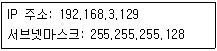
- 192.168.3.127
- 192.168.3.128
- 192.168.3.254
- 192.168.3.255
(정답률: 51%)
61. 다음 설명에 가장 적합한 서비스로 알맞은 것은?
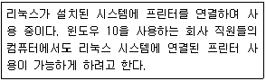
- NIS
- NFS
- Usenet
- SAMBA
(정답률: 66%)
62. 다음 중 원격지의 FTP 서버에 있는 파일을 로컬시스템으로 가져올 때 사용하는 ftp 명령의 모음으로 알맞은 것은?
- get, put
- get, recv
- put, recv
- get, send
(정답률: 58%)
63. 다음 중 이더넷 카드에 연결된 케이블의 상태를 확인할 수 있는 명령으로 알맞은 것은?
- ip
- route
- ethtool
- ifconfig
(정답률: 74%)
64. 다음 중 메일 관련 프로토콜로 거리가 먼 것은?
- POP3
- IMAP
- SNMP
- SMTP
(정답률: 76%)
65. 다음 중 이더넷(Ethernet)과 가장 관련 있는 전송기술로 알맞은 것은?
- ATM
- FDDI
- CSMA/CD
- Token Ring
(정답률: 68%)
66. 다음 중 OSI-7계층의 응용 계층에 해당하는 프로토콜로 거리가 먼 것은?
- HTTP
- POP3
- DNS
- SSL
(정답률: 55%)
67. 로컬 시스템의 계정과 다른 원격지 계정으로 ssh 서버에 접속하려고 한다. 다음 ( 괄호 ) 안에 들어갈 내용을 알맞은 것은?
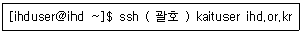
- -l
- -n
- -p
- -u
(정답률: 51%)
68. 다음 중 할당받은 C 클래스 1개의 네트워크 주소 대역에서 서브넷마스크를 255.255.255.192로 설정했을 경우에 생성되는 서브네트워크의 개수로 알맞은 것은?
- 2
- 4
- 64
- 128
(정답률: 61%)
69. 다음설명에해당하는LAN 구성방식으로알맞은것은?
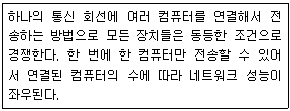
- 스타(Star)형
- 버스(Bus)형
- 링(Ring)형
- 망(Mesh)형
(정답률: 69%)
70. 다음 설명에 해당하는 국제기구로 알맞은 것은?
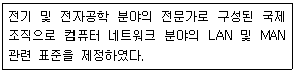
- ISO
- ITU
- IEEE
- ICANN
(정답률: 67%)
71. 다음 설명에 해당하는 프로토콜로 알맞은 것은?
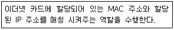
- IP
- ARP
- UDP
- ICMP
(정답률: 70%)
72. 다음 설명에 해당하는 netstat 명령의 상태값(state)으로 알맞은 것은?
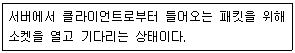
- LISTEN
- SYN_RECEIVED
- SYS-SENT
- ESTABLISHED
(정답률: 64%)
73. 다음 설명과 관련 있는 파일로 알맞은 것은?
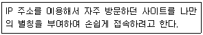
- /etc/hosts
- /etc/resolv.conf
- /etc/sysconfig/network
- /etc/sysconfig/network-scripts
(정답률: 58%)
74. 다음 중 네트워크 접두어 길이:24(/24)에 해당하는 서브넷마스크 값으로 알맞은 것은?
- 255.255.255.0
- 255.255.255.128
- 255.255.255.192
- 255.255.255.224
(정답률: 67%)
75. 다음과 같은 설정이 저장되는 파일로 알맞은 것은?
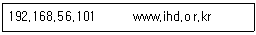
- /etc/hosts
- /etc/resolv.conf
- /etc/sysconfig/network
- /etc/sysconfig/network-scripts
(정답률: 58%)
76. 다음 중 IPv6에 대한 설명으로 틀린 것은?
- 패킷 크기의 확장
- IP 주소 대역 구분인 클래스의 확장
- 헤더 구조의 단순화
- 흐름 제어 기능 지원
(정답률: 68%)
77. 다음에서 설명하는 클라우드 서비스로 가장 알맞은 것은?
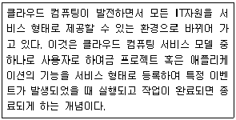
- SaaS(Storage as a Service)
- PaaS(Platform as a Service)
- FaaS(Function as a Service)
- IaaS(Infrastructure as a Service)
(정답률: 47%)
78. 다음 설명으로 가장 알맞은 것은?
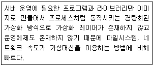
- VirtualBox
- Kubernetes
- Prometheus
- Docker
(정답률: 61%)
79. 다음 그림과 가장 관계가 깊은 설명으로 알맞은 것은?
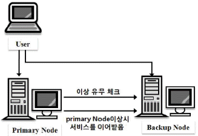
- 고성능 계산 능력을 제공하기 위한 목적의 LVS클러스터
- 지속적인 서비스 제공을 목적으로 하는 HA클러스터
- 대규모 서비스를 제공하기 위한 목적의 HPC클러스터
- 유동적인 네트워크 연결 모델을 지원하기 위한 AP클러스터
(정답률: 74%)
80. 다음 중 리눅스와 가장 거리가 먼 것은?
- GENIVI
- QNX
- TIZEN
- WebOS
(정답률: 54%)
- ㉠ : 0022 : 파일 권한을 나타내는 숫자로, 0은 파일 유형을 나타내는데 사용되며, 022는 소유자는 모든 권한을 가지고, 그룹과 다른 사용자는 읽기와 실행 권한만 가지는 것을 나타냅니다.
- ㉡ : -rwxr-xr-x : 파일 권한을 나타내는 문자열로, 첫 번째 문자는 파일 유형을 나타내는데 사용되며, 나머지 9개의 문자는 소유자, 그룹, 다른 사용자의 권한을 각각 의미합니다. r은 읽기 권한, w는 쓰기 권한, x는 실행 권한을 나타냅니다. -는 해당 권한이 없음을 나타냅니다.
- ㉢ : S : SUID나 SGID 권한을 나타내는데 사용되며, SUID는 파일 실행 시 해당 파일의 소유자 권한으로 실행되도록 하는 권한, SGID는 파일 실행 시 해당 파일의 그룹 권한으로 실행되도록 하는 권한을 나타냅니다.
- ㉣ : o=rx : 다른 사용자의 권한을 나타내는데 사용되며, o는 다른 사용자를 의미하고, =는 해당 권한을 정확히 설정하겠다는 의미이며, rx는 읽기와 실행 권한을 나타냅니다.